Examen interciclo · SO 02 DiseñoMidterm assessment · SO 02 Design
MIDTERM REVIEW
Mesa de póker desmontableKnock-down poker table
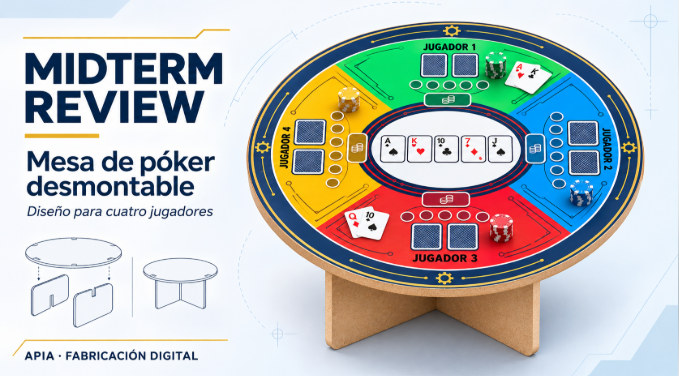
Caso de estudioDesign brief
Diseñar una mesa de póker para cuatro personas en un apartamento de alquiler de corta estancia, pensada para jóvenes nómadas digitales. La mesa también debe funcionar como comedor o mesa de jardín, con una altura compatible con sillas convencionales.
Design a four-player poker table for a short-term rental apartment, with young digital nomads in mind. The table should also work for dining or outdoor use, at a height suitable for standard chairs.
- Fabricar el prototipo en MDF al 25–30 % del tamaño real.
- Usar de tres a cinco piezas planas y apilables que puedan montarse y desmontarse sin tornillos ni pegamento.
- Make the MDF prototype at 25–30% of full size.
- Use three to five flat, stackable parts that can be assembled and taken apart without screws or glue.
Prueba inicial en formato pequeñoSmall-scale trial
El equipo comenzó con una mesa pequeña para explorar su uso en una oficina con poco espacio. La prueba sirvió para comprobar cómo se cruzaban las patas y cómo entraban en el tablero, además de ensayar la compensación del ancho de corte (kerf). El encaje permitió pasar a la siguiente versión. La estabilidad del conjunto se revisó más adelante.
The team started with a small table to explore use in a compact office. The trial checked how the legs interlocked and fitted into the tabletop, and tested compensation for the width of the laser cut (kerf). The fit allowed the team to move on to the next version. Assembly stability was checked later.

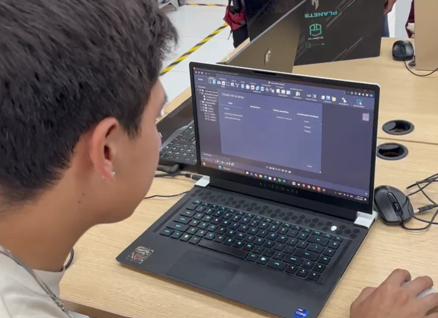

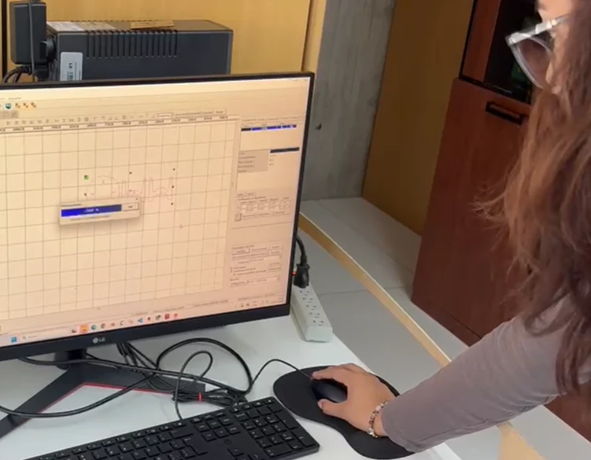

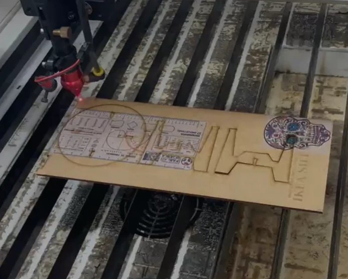

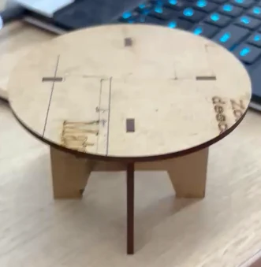
Condiciones de uso y ergonomíaUse conditions and ergonomics
Para definir las proporciones, el equipo tomó como referencia una silla convencional con un asiento a unos 45 cm del piso. La mesa debe usarse sobre una superficie plana. La relación entre la altura del asiento y la del tablero determina el espacio disponible para las piernas.
To define the proportions, the team used a conventional chair with a seat height of about 45 cm as a reference. The table is intended for use on a level surface. The relationship between seat and tabletop height determines the available legroom.

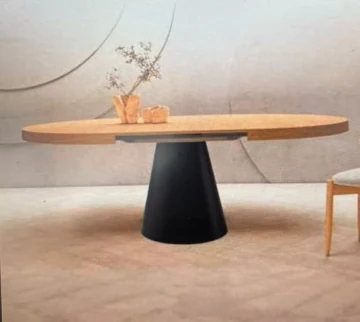
Bocetos, AutoCAD y dimensionesSketches, AutoCAD and dimensions
Los bocetos exploraron la forma circular, los cuatro puestos de juego y una base de dos patas cruzadas. En AutoCAD se definieron el contorno del tablero, las ranuras, las muescas de apoyo y la correspondencia entre las tres piezas.
The sketches explored a circular shape, four player positions and a base with two interlocking legs. In AutoCAD, the team defined the tabletop profile, slots, support notches and how the three parts fit together.
El plano del prototipo está a escala 1:4 (25 % del tamaño de referencia). Las cotas indican un tablero de Ø 275 mm y un perfil de pata de 240 mm de ancho por 187,5 mm de alto, con un tramo interior acotado de 70 mm. A escala 1:1, esas cotas equivalen a Ø 1.100 mm, 960 × 750 mm y 280 mm, respectivamente.
The prototype drawing is at 1:4 scale (25% of the reference size). It shows a Ø 275 mm tabletop and a leg profile 240 mm wide by 187.5 mm high, with a 70 mm dimension on the inner section. At 1:1 scale, those dimensions correspond to Ø 1,100 mm, 960 × 750 mm and 280 mm, respectively.

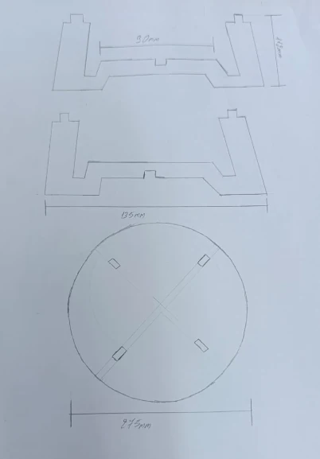

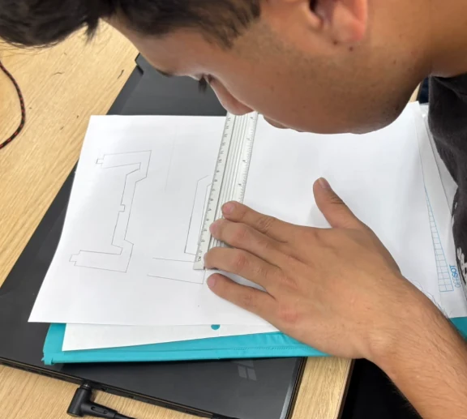

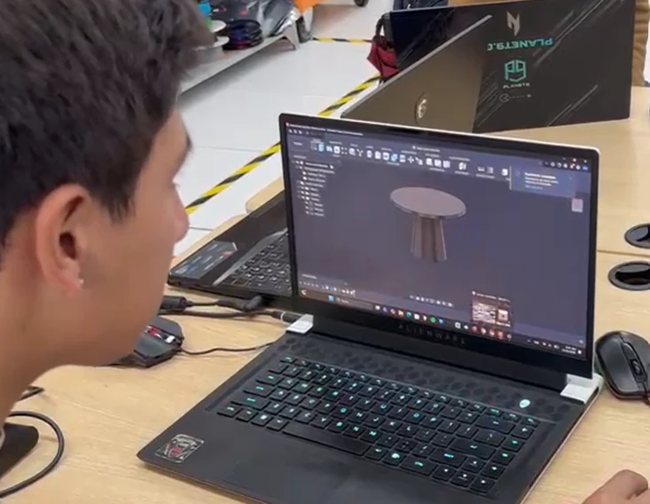

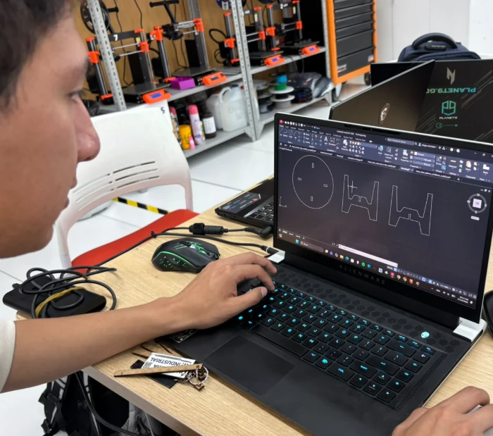

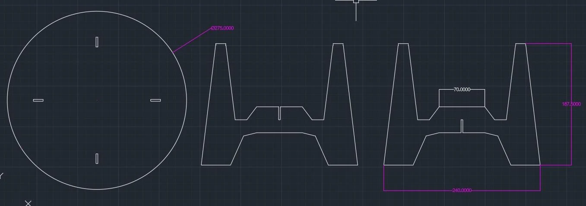
Corte láser del MDF y ajuste del kerfMDF laser cutting and kerf adjustment
En la prueba a tamaño de fabricación, las ranuras se habían dibujado para un MDF de 3 mm. Al medir el tablero utilizado, el equipo comprobó que tenía 2,85 mm de espesor. Esa diferencia afectó al ajuste de las piezas. Se revisaron las ranuras y los perfiles de las patas, y se repitieron los cortes hasta lograr un encaje satisfactorio.
For the fabrication-size trial, the slots had been drawn for 3 mm MDF. When the team measured the actual sheet, it was 2.85 mm thick. The difference affected how the parts fit. The team revised the leg profiles and slots and repeated the cuts until the joints fitted satisfactorily.
Con el conjunto armado se hizo una prueba práctica de apoyo colocando una computadora portátil sobre el tablero.
With the table assembled, the team carried out a practical support check by placing a laptop on the tabletop.

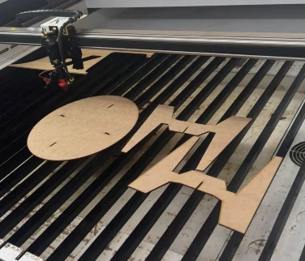

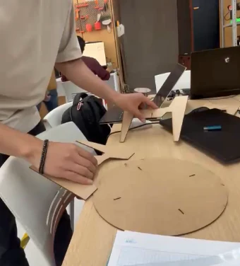

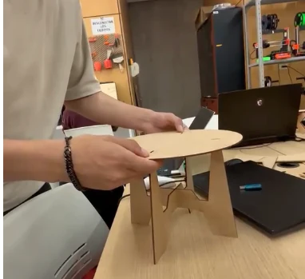

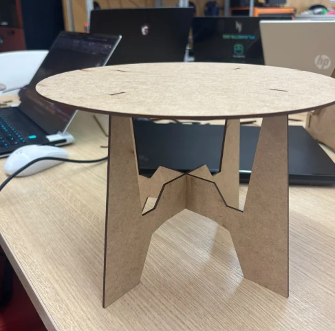

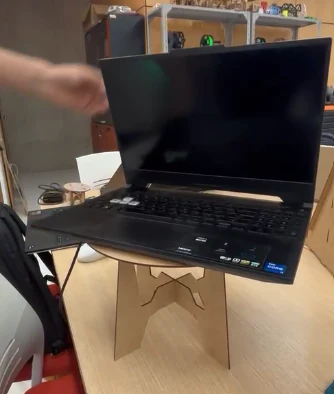
Diseño del tablero e impresión UVTabletop artwork and UV printing
La gráfica del tablero divide el círculo en cuatro sectores de colores. Cada puesto tiene espacios para dos cartas y fichas; en el centro se reservan cinco espacios para las cartas comunitarias. El equipo incorporó la identidad visual del Industrial FabLab y de la Universidad de Cuenca.
The circular artwork is divided into four colored player areas. Each seat has space for two cards and chips, and five spaces in the center are reserved for shared cards. The design incorporates the visual identities of the Industrial FabLab and the University of Cuenca.
La gráfica se preparó en el software de impresión UV y se revisó la ubicación del arte sobre el tablero de MDF. El equipo configuró y calibró la máquina para imprimir la gráfica. El centrado de la impresión quedó como aspecto a mejorar.
The artwork was prepared in the UV printing software and its placement on the MDF tabletop was checked. The team set up and calibrated the printer for the artwork. Centering the print was identified as an area for improvement.

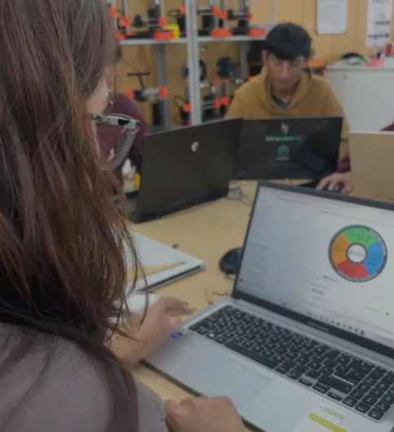

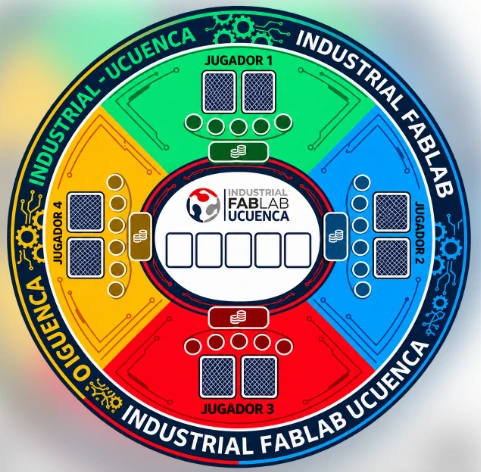

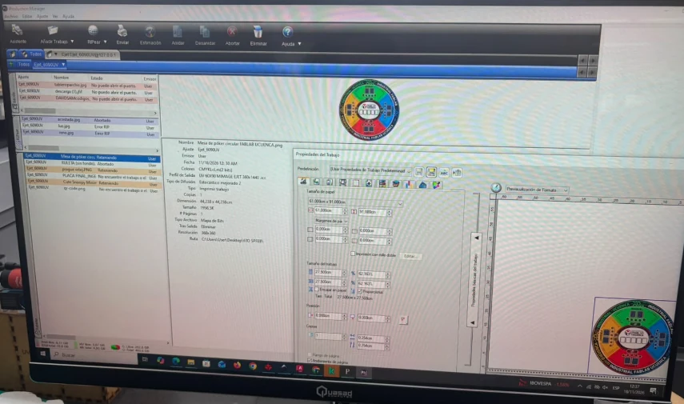

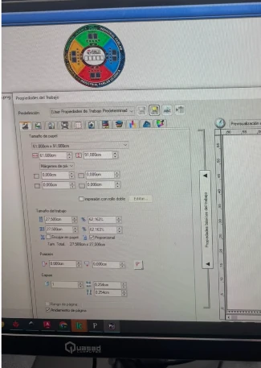

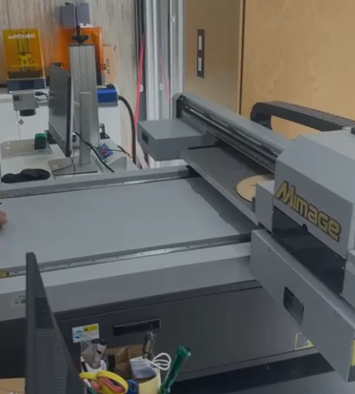

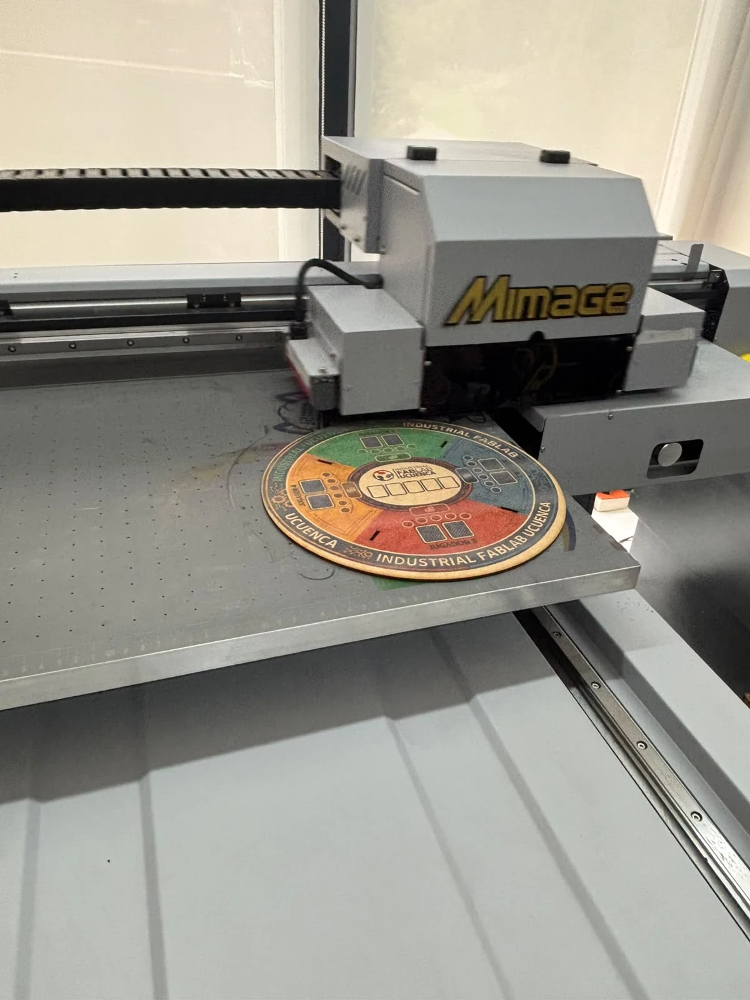

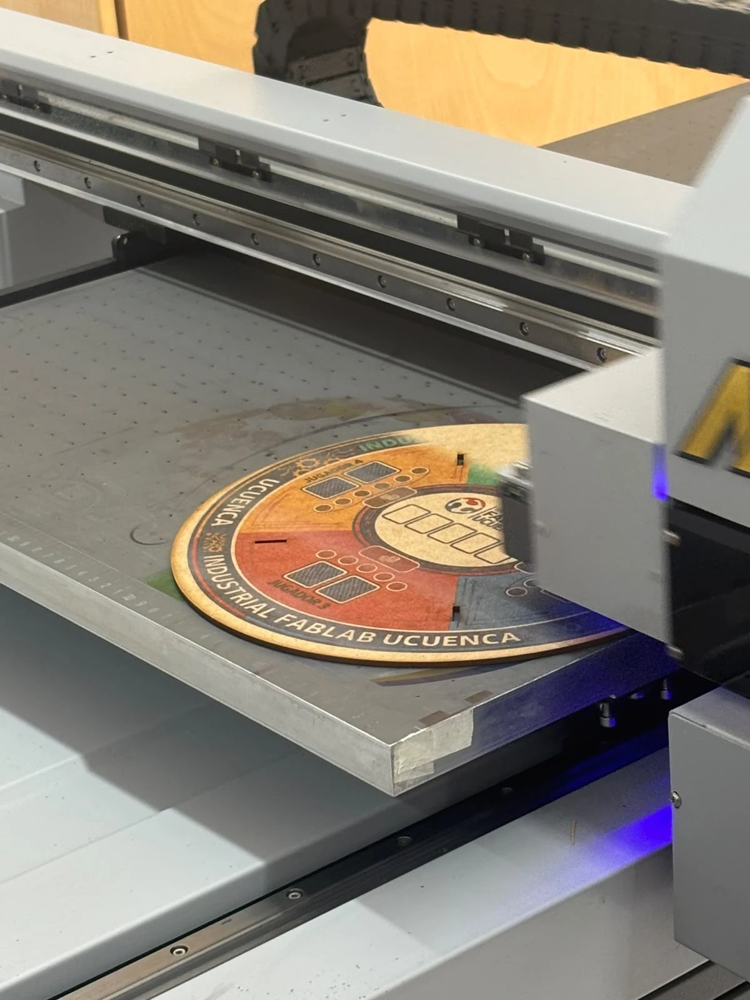
Armado, almacenamiento y transporteAssembly, storage and transport
El manual identifica tres piezas: el tablero circular y dos patas ranuradas. El ajuste de las uniones permite montar la mesa sin tornillos ni pegamento. Una vez desmontadas, las piezas se pueden apilar en plano para guardarlas y transportarlas.
The manual identifies three parts: the circular tabletop and two slotted legs. The joints allow the table to be assembled without screws or glue. Once disassembled, the three parts can be stacked flat for storage and transport.
- Cruzar las patas por las ranuras centrales hasta formar la base.
- Alinear los cuatro extremos superiores de las patas con las ranuras del tablero.
- Asentar el tablero con cuidado y comprobar que las piezas queden firmes, sin forzar las uniones.
- Interlock the legs at their center slots to form the base.
- Align the four upper ends of the legs with the slots in the tabletop.
- Seat the tabletop gently and check that the pieces fit securely, without forcing the joints.

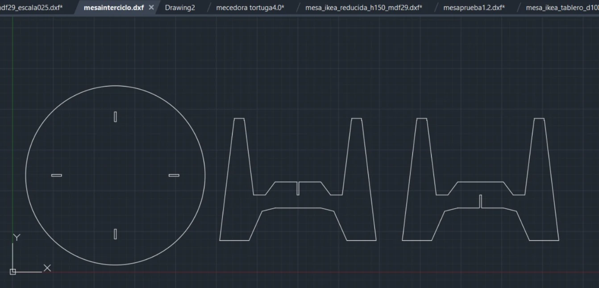

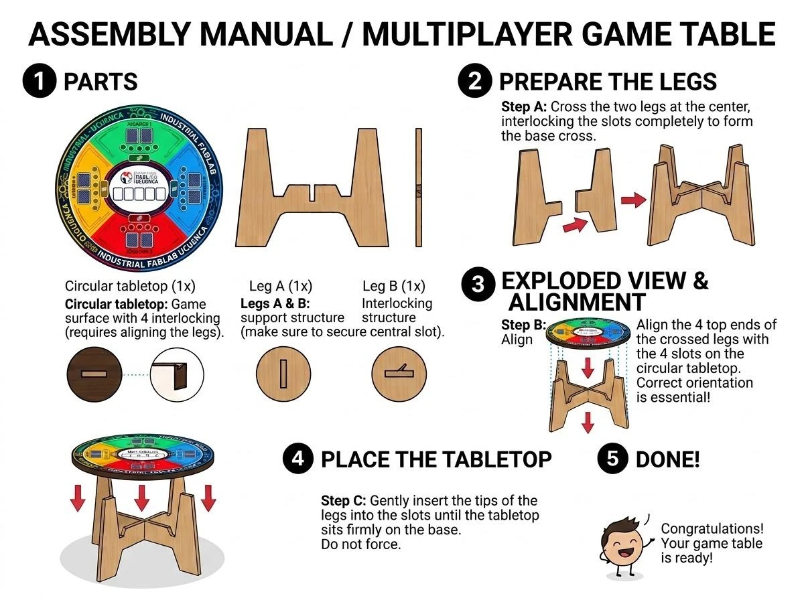

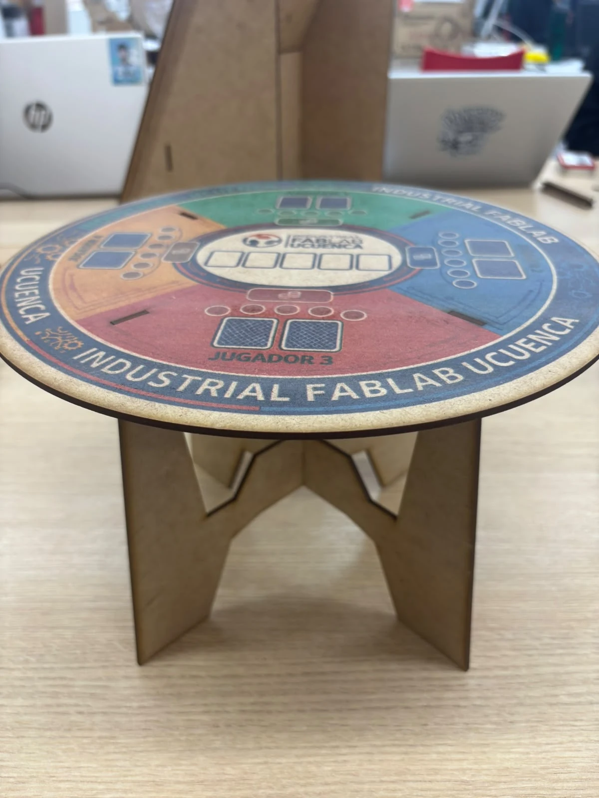

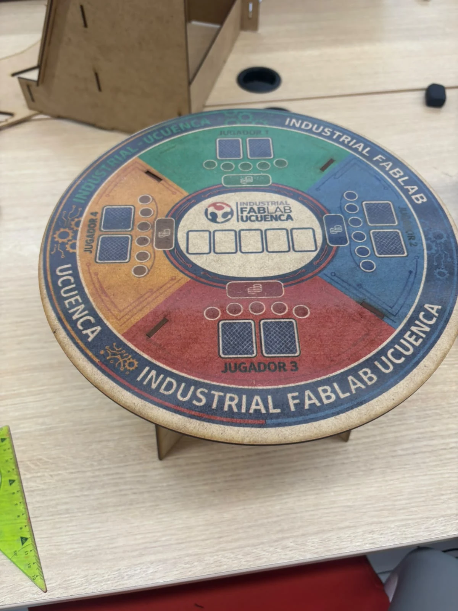
Documentación web y videoWebsite documentation and video
La bitácora reúne el desarrollo del diseño, las pruebas y los archivos de fabricación en el apartado MIDTERM REVIEW. El equipo preparó la documentación con Codex y GitHub y editó en CapCut un video de un minuto del proceso. El video queda pendiente de incorporar a la página.
The MIDTERM REVIEW page brings together the design work, tests and fabrication files. The team prepared the documentation with Codex and GitHub and edited a one-minute process video in CapCut. The video is still to be added to the page.

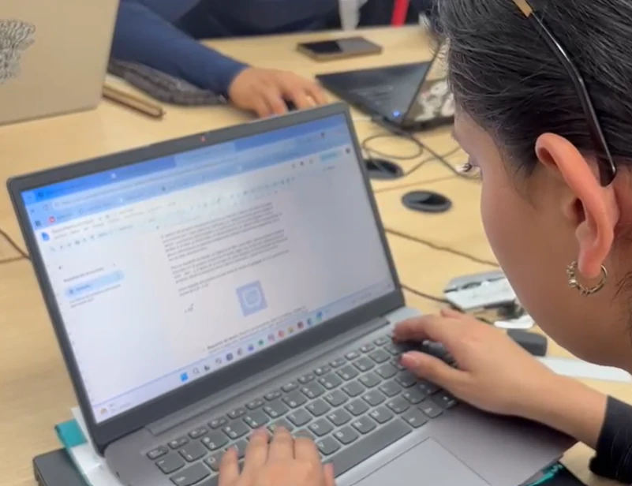

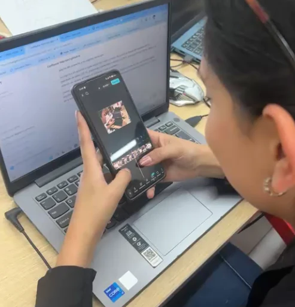

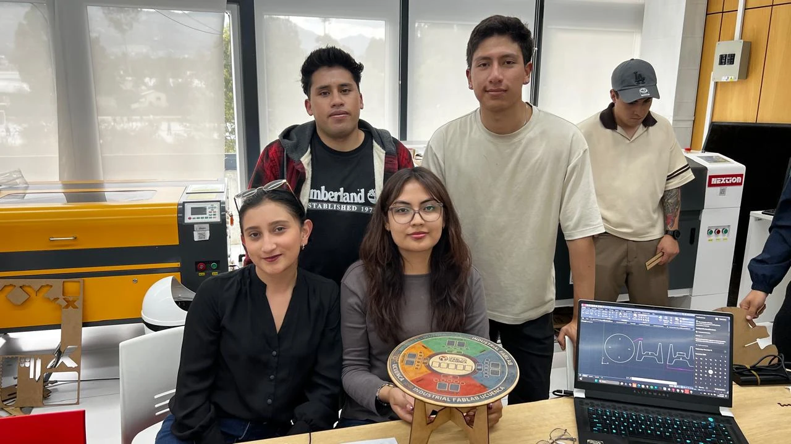
Aprendizajes, dificultades y conclusionesLessons, challenges and conclusions
Qué aprendimosWhat we learned
Mejoramos el diseño de uniones para muebles desmontables y practicamos la preparación y calibración de la impresión UV. La prueba de armado y apoyo ayudó a valorar el comportamiento del conjunto.
We improved our ability to design joints for knock-down furniture and practiced preparing and calibrating the UV printer. The assembly and support check helped us assess how the parts worked together.
Qué modificamosWhat we changed
Revisamos varias veces los perfiles y encajes de las patas porque al principio no ajustaban correctamente. El espesor real del MDF condicionó la geometría de las ranuras. Para la siguiente versión queda mejorar el centrado de la gráfica UV.
We revised the leg profiles and joints several times because they did not initially fit correctly. The actual MDF thickness affected the slot geometry. Better centering of the UV artwork is a priority for the next version.
RecomendacionesRecommendations
Medir el MDF antes de diseñar las ranuras, verificar la compensación del kerf con una muestra y revisar las superficies de contacto. Las muescas deben sostener el tablero y evitar que las patas sobresalgan. Probar primero una unión pequeña y distribuir las piezas antes del corte ayuda a reducir repeticiones y desperdicio.
Measure the MDF before drawing the slots, check kerf compensation on a sample and review the contact surfaces. The notches should support the tabletop and keep the legs from protruding. Test one small joint first and plan the part layout before cutting to reduce repeated cuts and material waste.
Aportes del equipoTeam contributions
| IntegranteTeam member | ActividadActivity |
|---|---|
| Diego | Diseño en AutoCAD, ajuste del kerf, corte y apoyo en la impresión del MDF, y armado de la mesa.AutoCAD design, kerf adjustment, MDF cutting and support with printing, and table assembly. |
| Camila | Diseño del tablero de póker, calibración de la máquina e impresión UV.Poker tabletop artwork, UV printer calibration and UV printing. |
| Steven | Boceto e idea inicial de la mesa, definición de dimensiones y manual de armado.Initial table concept and sketch, dimensioning and assembly manual. |
| Carla | Documentación del trabajo, uso de GNU, creación del apartado web con Codex y GitHub, redacción y edición del video de un minuto.Project documentation, use of GNU, website section built with Codex and GitHub, writing and editing the one-minute video. |
| EquipoTeam | Desarrollo conjunto de la idea, ajustes y mejoras del diseño.Joint development of the concept, design adjustments and improvements. |